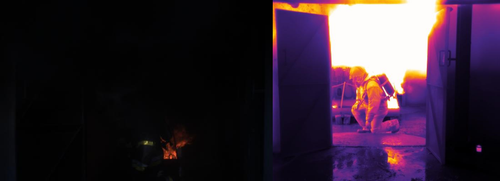

Person detection in challenging conditions: combining RGB and thermal imaging on wearable devices
Detecting persons possibly hidden in challenging environments with smoke, fog or in the dark is a complex task for the dismounted soldier in tactical operations as well as for firefighters in hazardous, urgency situations. Miniaturization has made more and more computer vision applications on lightweight, wearable devices possible. With the advent of smartglasses, these systems may be operated in a hands-free manner. This opens the way for a whole new series of use cases in operational scenarios. Nowadays, thermal cameras with a small form factor and low power requirements such as the FLIR One are easily found on the market. However, such cameras typically have a small resolution. As a consequence, they are often coupled with standard RGB cameras to capture high-resolution information in the visible spectrum. Fusion of RGB and thermal sensors is an active field of research [1, 2].
 Figure 1: A person hidden in smoke and fire can in some cases more easily be distinguished in a thermal image (right). However, in case of a fire, the smoke might be so hot that the person can not be distinguished anymore. In this thesis we therefore combine thermal and RGB imaging to make the person detection more robust under challenging conditions.
Deep learning is now the standard set of methods for most computer vision applications, including generic object detection and scene segmentation. New techniques show great results [3, 4], though sometimes at the expense of heavy computational needs. Adding an RGB-thermal sensor fusion method will only increase this computational requirement. New strategies must be elaborated to run RGB-thermal person detection efficiently on wearable devices such as smartphones or smartglasses.
This thesis has been conducted by Tibo Maes (Tibo.Maes@UGent.be) and is in collaboration with the Royal Military Academy (RMA).
References
[1] F. Almasri and O. Debeir, “RGB Guided Thermal Super-Resolution Enhancement,” 2018 4th International Conference on Cloud Computing Technologies and Applications (Cloudtech), Brussels, Belgium, 2018, pp. 1-5.
[2] Y. Sun, W. Zuo and M. Liu, “RTFNet: RGB-Thermal Fusion Network for Semantic Segmentation of Urban Scenes,” in IEEE Robotics and Automation Letters, vol. 4, no. 3, pp. 2576-2583, July 2019.
[3] J. Redmon, and A. Farhadi. “Yolov3: An incremental improvement. arXiv 2018.” arXiv preprint arXiv:1804.02767 (2019).
[4] W. Liu et al. “Ssd: Single shot multibox detector.” European conference on computer vision. Springer, Cham, 2016.